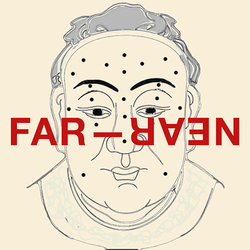

Far-Near / Far-Near Physiognomy
AR (2020)
For Lunar New Year (Year of the Metal Rat), I partnered up with the NYC-based publication Far-Near to present an Instagram effect that sheds light on one’s past, present and future based on the Twelve Houses of traditional Chinese face reading. These Twelve Houses comprise parents, fortune, travel, siblings, love, career, health, popularity, assets, wealth, children and life.
Visual direction / Lulu Yao Gioiello
Readings, textures, 3D and AR production / Helena Dong
☆ Try Far-Near Physiognomy
AR (2020)
For Lunar New Year (Year of the Metal Rat), I partnered up with the NYC-based publication Far-Near to present an Instagram effect that sheds light on one’s past, present and future based on the Twelve Houses of traditional Chinese face reading. These Twelve Houses comprise parents, fortune, travel, siblings, love, career, health, popularity, assets, wealth, children and life.
Visual direction / Lulu Yao Gioiello
Readings, textures, 3D and AR production / Helena Dong
☆ Try Far-Near Physiognomy
Demo video / Lulu Yao Gioiello